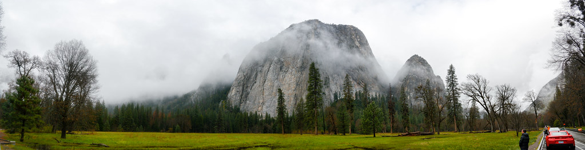

Flickr CC
Alpine Mountain Mist
Atmospheric alpine mountain ridges veiled in early morning mist.
Search, filter, and stream copyright-free photography across Pexels, Pixabay, Unsplash, Flickr, Wikimedia Commons, and Openverse with zero friction. One unified interface with non-blocking async execution, intelligent caching, and Model Context Protocol support.
brew tap AtaCanYmc/tap && brew install stock-fetcher
Designed from the ground up for high-throughput scripting, resilient terminal workflows, and autonomous AI agents.
Powered by httpx and asyncio.gather. Execute concurrent queries across Pexels, Pixabay, Unsplash, and Flickr simultaneously with unified timeout handling and graceful partial fallback.
Query Creative Commons licensed media immediately without registering developer accounts, creating API keys, or passing tokens.
Configurable MemoryCache and persistent DiskCache respecting upstream HTTP Cache-Control: max-age=N headers and custom TTL settings.
Migrated from raw dictionaries to validated StockImage models with full IDE autocomplete, type safety, and backwards-compatible dictionary subscripting.
Run as a native FastMCP stdio server to empower AI agents in Claude Desktop, Cursor, and Antigravity with live stock image search tools.
These copyright-free photographs were discovered, retrieved, and downloaded into this showcase using our integrated CLI scraper and client tools.
Atmospheric alpine mountain ridges veiled in early morning mist.
Clean modern facade reflecting sky gradients with geometric precision.
Brutalist architectural angles and tactile shadows.

Dramatic limestone summit breaking through low cloud cover.
Dynamic emerald surf breaking along an open shoreline.
Deep night sky exposure detailing starry clusters and nebulae.
Seamlessly transition between Python script, asynchronous coroutine, shell pipeline, and AI tool.
from stock_fetcher import ClientFactory, MemoryCache
# 1. Instantiate with in-memory caching
cache = MemoryCache(default_ttl=3600)
client = ClientFactory.get("pexels", api_key="YOUR_KEY", cache=cache)
# 2. Search returns validated Pydantic models
images = client.search(term="neon reflections", limit=5)
for img in images:
print(f"[{img.source.upper()}] {img.title} -> {img.url_original}")import asyncio
from stock_fetcher import ClientFactory
async def main():
# Execute non-blocking parallel search across 6 engines
results = await ClientFactory.asearch_all(
term="nordic winter landscape",
limit_per_provider=3
)
for provider, images in results.items():
print(f"Provider: {provider} returned {len(images)} images")
asyncio.run(main())# Concurrent search piped to table or JSON
stock-fetcher find "cyberpunk neon city" --limit 3 --format table
# Zero-config Flickr query extracting original URLs for xargs
stock-fetcher search flickr "classic aircraft" -l 5 -f urls | xargs -n 1 curl -O
# Automated batch download with path traversal defense
stock-fetcher search flickr "alpine lake" -l 3 -d -o ./downloads// Claude Desktop or Antigravity config (~/.config/claude/claude_desktop_config.json)
{
"mcpServers": {
"stock_fetcher": {
"command": "python",
"args": ["-m", "stock_fetcher.mcp.server"],
"env": {
"PEXELS_API_KEY": "YOUR_KEY",
"PIXABAY_API_KEY": "YOUR_KEY",
"UNSPLASH_API_KEY": "YOUR_KEY"
}
}
}
}